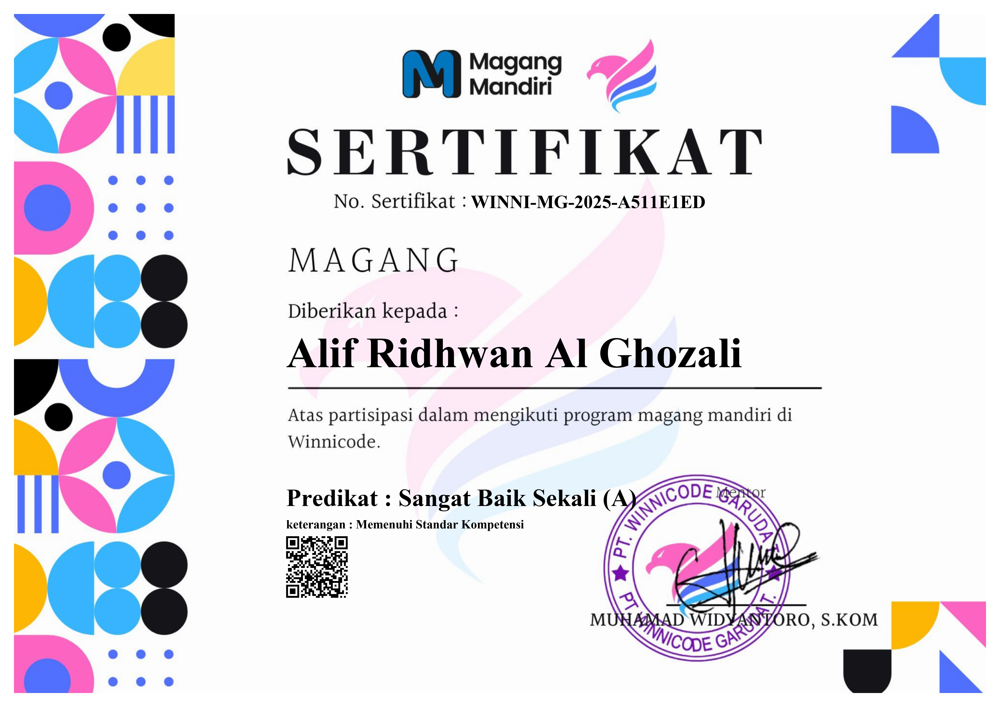
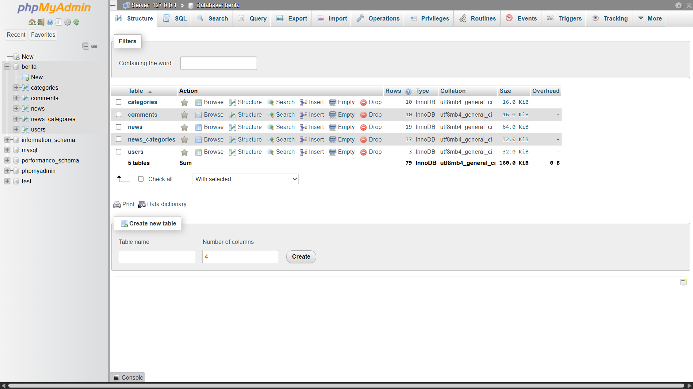
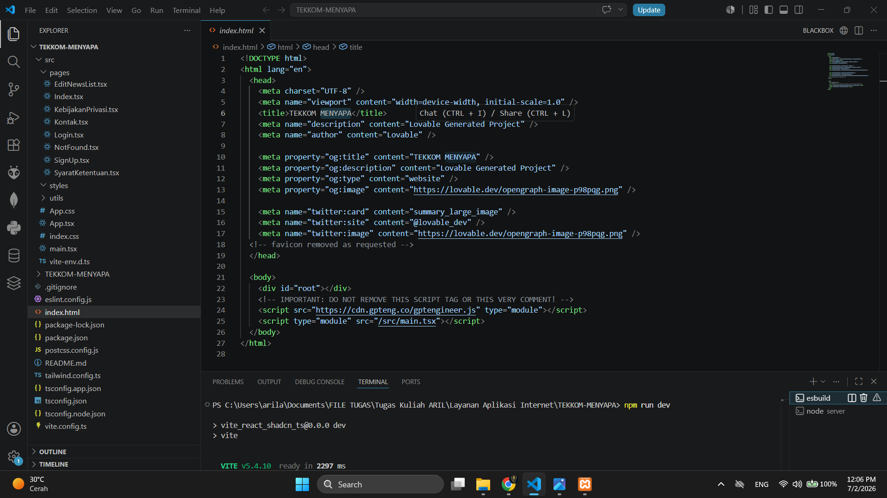
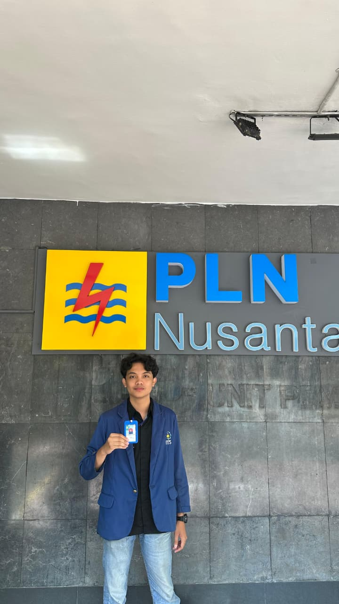
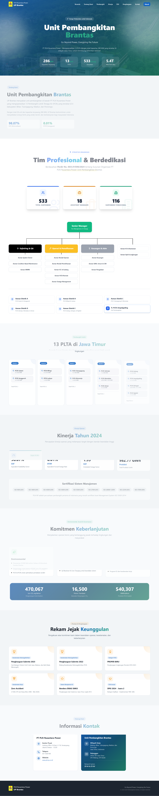
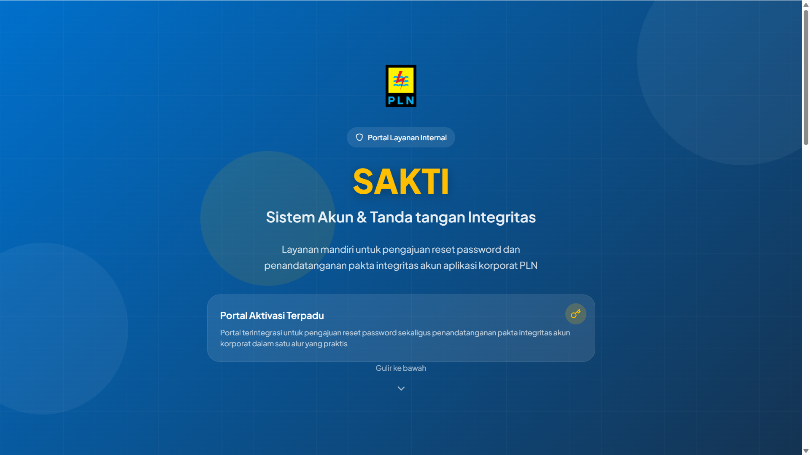
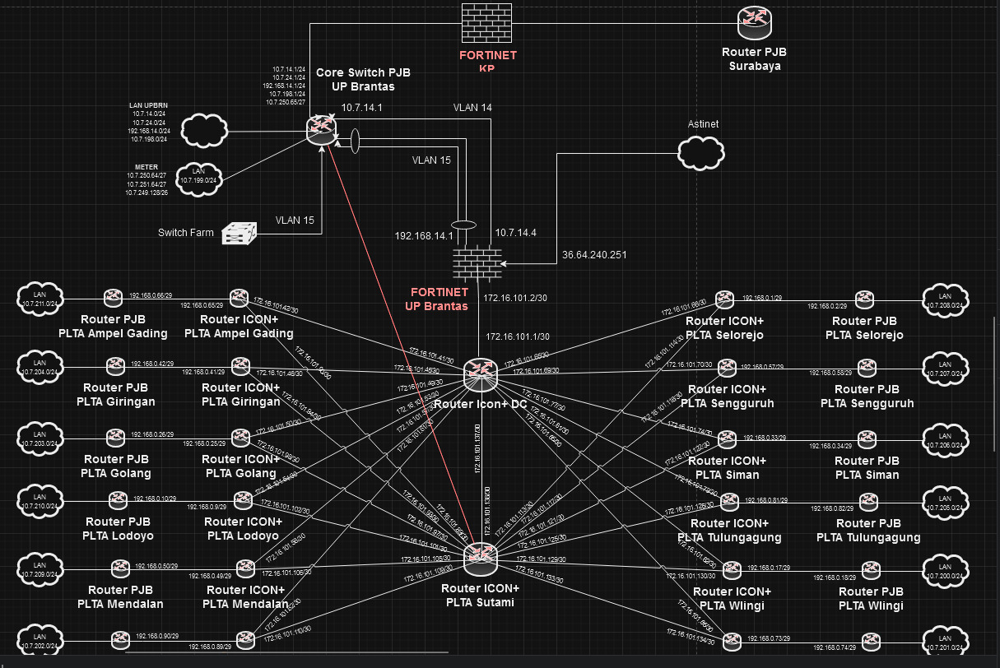

Professional Experience
Full-Stack Software Engineer Intern
PT Winnicode Garuda Teknologi
- Full-Stack Development: Engineered the end-to-end architecture of the TEKKOM MENYAPA web portal, developing a highly responsive user interface with React.js, Vite, and Tailwind CSS alongside a robust backend server within a unified repository.
- Backend & Database Architecture: Developed secure server-side infrastructure using Node.js, Express.js, and JWT for secure user authentication, integrated with a PostgreSQL database.
- System Integration & Logic: Implemented dynamic client-side routing, state management, and administrative modules ensuring seamless data communication.




IT Infrastructure & System Integration Intern (Engineering Division)
PT PLN Nusantara Power UP Brantas
- Web Application Development (Company Profile): Architected and developed a comprehensive corporate profile web application equipped with an integrated admin panel for seamless data management. Designed a highly responsive UI to dynamically showcase complex enterprise data, including organizational structures, operational statistics (286 MW capacity across 13 PLTA units), performance metrics, and ESG commitments.
- System Automation & Portal Development (SAKTI): Engineered SAKTI (Sistem Akun & Tanda Tangan Integritas), an integrated internal self-service portal designed to streamline IT administrative workflows. Developed automated backend logic to handle corporate password reset requests and the digital signing of integrity pacts, effectively digitizing manual processes and enhancing operational efficiency.
- Enterprise Network Architecture: Designed and mapped a high-availability, multi-site network topology for the power plant's infrastructure. Visualized the interconnections between the central Core Switch, Fortinet firewalls, and remote ICON+ routers across various operational sites (e.g., PLTA Sutami, Sengguruh, Siman), ensuring secure and robust data routing capabilities.



